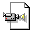

Album
Festival aérospatial jeunesse du CRDV 1999 avec Babylone

Vidéo du décollage de Babylone
252 Ko
Babylone (1999)
Kiosque du
GAUL
Alexis et "Flo" transportent
Babylone
pour le retour
Spectateurs
Décollage de
Babylone
Photo de groupe avant le lancement
Quelques membres avec
Babylone
Patrick et Alexis travaillent sur l'électronique
Réunion hebdomadaire où "FLO" explique que le parachute devrait tenir le coup
Petite réunion estivale
Photo de groupe sans "PO"
Même photo de groupe où "FLO" à l'air moins bête!
Riopelle (1998)
Vidéo du décollage de
Riopelle
(754 Ko)
Décollage de
Riopelle
Décollage de
Riopelle
Moment d'excitation dû au bon décollage ou énervement face à la descente rapide?
Entraille de
Riopelle
: Panneau de contrôle
Je coupe le fil rouge ou le fil bleu?
Test de fumigène sur la "testmobile"
Gyroscope
Gyroscope
Florimond, Catherine et Alexis les insomniaques
Quand à Marc, lui il dort!
Grrrrr!!!
Test de parachute sur la "testmobile"
Riopelle
dans la rampe
"Chess"
On recommence "FLO" n'a pas rentré sa langue
Vraiment "full flash king" la fusée
Photo "pré-lancement"
Riopelle
!!!
Riopelle
au laboratoire de Vision numérique de l'université Laval
"Zut, il y a une soudure qui n'a pas tenue"!
Il y a encore de la place?
Apollon (1997)
Apollon
s'en allant vers les cieux
Préparatifs
Apollon
dans la rampe de lancement
Miranda (1997)
Voici
Miranda
Miranda
avec la "gonzesse" du
GAUL
Croquis du gyroscope
Fabrication du gyroscope
gyroscope
Miranda
enfin prête
Artémis (1995)
Petit "meeting" avant le lancement
Pas facile!!!
Oui, oui c'est facile!!!
l'électronique d'
Artémis
Voici le "dream team" 995
Voici
Artémis
"On est presque prêt"
Petites retouches sur l'électronique
Et on l'insère dans la rampe
Orion (1994)
l'équipe d'
Orion
"On rit bien, mais c'est pas drôle"!!
Voici
Orion
La rampe de lancement...
Feu...
Voici ce qui est arrivé à une consoeur d'
Orion
, son parachute à malfontionné
Et le résultat...
"Les insomaniaques s'amusent"
Orion
dans la rampe de lancement
Rampe (1997)
Rampe de lancement "made in GAUL"
Rampe de lancement "made in GAUL"
Conception: Steve Potvin
Dernière modification: 02/02/2000